Analisis Klaster (Clustering)
Hierarki · Partisi · K-Optimal · Advanced
Bahan Belajar UAS Data Mining — Pertemuan 9 (Politeknik Statistika STIS)
1. Pendahuluan & Konsep Dasar
Tujuan Utama Analisis Klaster
Membangun kelompok/kelas/klaster dengan memastikan dua kondisi dualitas:
Dalam satu kelompok/klaster, objek-objek pengamatan harus semirip mungkin satu sama lain (jarak kecil, kohesi tinggi).
Antar kelompok/klaster yang berbeda, objek-objek pengamatan sebisa mungkin seberbeda mungkin (jarak besar, separasi tinggi).
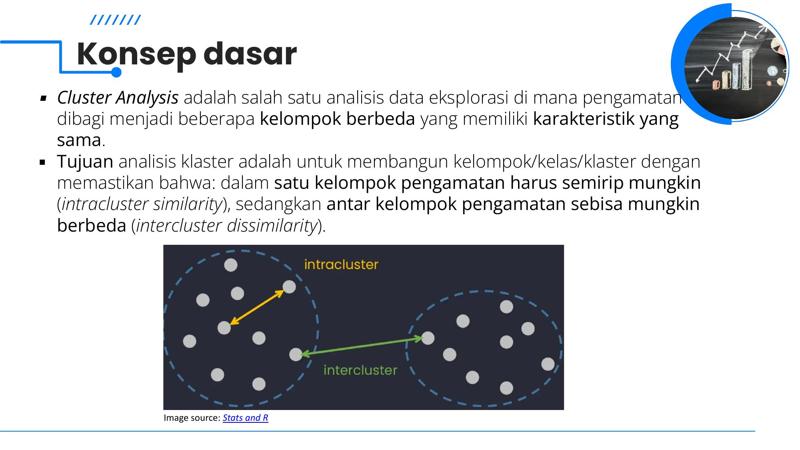
Analogi: Introverts vs Extroverts
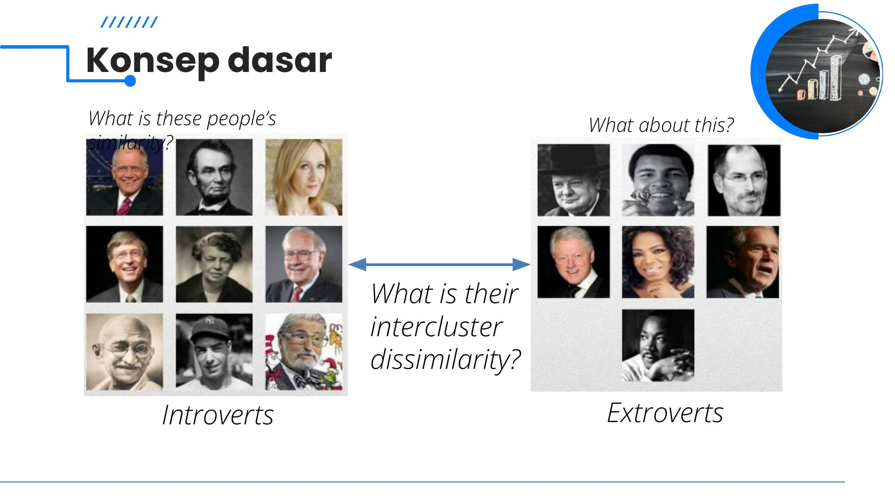
Karakteristik Unsupervised Learning
- Clustering termasuk ke dalam ranah Unsupervised Learning karena tidak ada informasi label kelas target ($y$) dalam data latih.
- Oleh karena itu, clustering adalah bentuk learning by observation (belajar melalui pengamatan struktur alami data), bukan learning by examples (supervised).
Aplikasi & Kegunaan Clustering
- Aplikasi Luas: Business intelligence (segmentasi pasar & nasabah), image pattern recognition, web search result clustering, bioinformatika (analisis ekspresi gen / microarrays), security & fraud detection, analisis spasial.
- Data Mining: Mengetahui sebaran data, mengamati karakteristik setiap cluster, memfokuskan analisis lanjutan pada segmen tertentu.
- Data Segmentation: Mempartisi kumpulan data besar ke dalam subgrup homogen.
- Outlier Detection: Mengidentifikasi objek yang berada jauh dari klaster mana pun (dapat mewakili anomali, penipuan, atau kasus unik yang sangat berharga).
2. Syarat-Syarat Analisis Klaster dalam Data Mining
Dalam konteks Big Data dan Data Mining modern, sebuah algoritma klaster yang handal dituntut memenuhi syarat-syarat berikut:
| Syarat | Deskripsi & Implikasinya |
|---|---|
| Scalability | Algoritma harus dapat menangani jutaan baris data secara efisien. Mengambil sampel kecil dapat menyebabkan hasil yang bias. |
| Menangani Berbagai Atribut | Mampu bekerja tidak hanya pada data numerik (interval/rasio), tetapi juga biner, nominal/kategorikal, ordinal, atau data campuran. |
| Menemukan Bentuk Arbitrer (Arbitrary Shapes) | Klaster alami dapat berbentuk bulan sabit, cincin konsentris, spiral, atau memanjang. Algoritma berbasis jarak Euclidean/Manhattan (seperti K-Means) cenderung hanya menemukan klaster sferis (spherical/bulat). Metode density-based (DBSCAN) mampu mengatasi batasan ini. |
| Minimal Domain Knowledge | Tidak membutuhkan pengguna memasukkan banyak parameter rumit yang sulit ditebak (seperti menentukan jumlah $K$ secara manual). |
| Tahan terhadap Noise & Outlier | Mampu membedakan titik data yang valid dari data noisy, error, atau outlier tanpa merusak posisi pusat klaster. |
| Insensitif terhadap Urutan Input | Hasil klaster tidak boleh berubah hanya karena baris dataset diacak urutannya. |
| Menangani Dimensi Tinggi | Mampu mengatasi fenomena Curse of Dimensionality (di mana semua jarak antar titik menjadi relatif homogen pada dimensi sangat tinggi). |
| Constraint-Based Clustering | Mampu mengakomodir batasan-batasan bisnis nyata (misalnya kapasitas maksimal klaster, batasan geografis). |
| Interpretability & Usability | Hasil partisi harus mudah ditafsirkan, masuk akal secara substansi domain, dan dapat ditindaklanjuti. |
3. Ukuran Jarak (Distance Metrics) Lengkap
Pemilihan ukuran jarak adalah fondasi paling krusial dalam clustering karena rumus jarak yang dipilih menentukan apakah dua objek dianggap "mirip" atau tidak.
A. Ukuran Jarak Klasik (Geometric)
Dua vektor berdimensi $n$: $\mathbf{x} = (x_1, x_2, \dots, x_n)$ dan $\mathbf{y} = (y_1, y_2, \dots, y_n)$. Dihitung dengan fungsi dist() di R base.
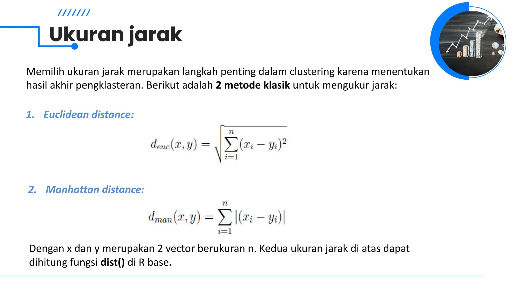
B. Ukuran Jarak Berbasis Korelasi (Correlation-Based Distances)
Diakses via get_dist() di package factoextra. Nilai korelasi $r \in [-1, 1]$ diubah menjadi jarak $d \in [0, 2]$ dengan prinsip: semakin berkorelasi kuat ($r \to 1$), jaraknya semakin mendekati 0.
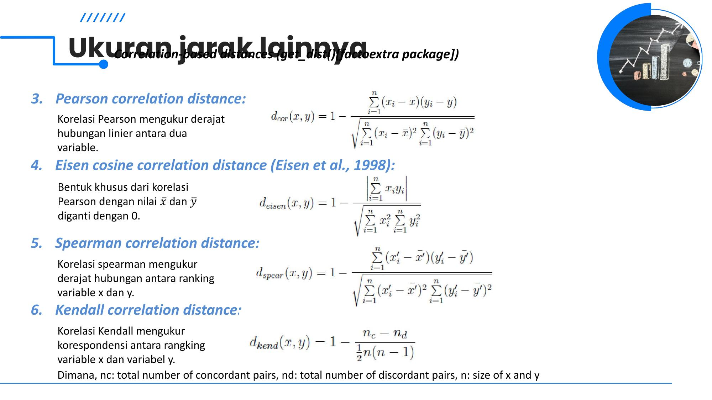
4. Tipe Jarak Mana yang Harus Dipilih?
Ini adalah materi konsep yang sangat sering diujikan di soal analisis/teori!
Kapan Menggunakan Jarak Euclidean?
- Software statistik biasanya memakai Euclidean sebagai default.
- Cocok ketika magnitudo absolut variabel penting.
- Observasi dengan nilai fitur tinggi akan mengelompok bersama observasi bernilai tinggi; observasi bernilai rendah bersama yang rendah.
- Contoh: Mengelompokkan daerah berdasarkan tingkat kemiskinan dan pengangguran (besaran angka mencerminkan status riil).
Kapan Menggunakan Jarak Berbasis Korelasi?
- Cocok jika kita ingin mengelompokkan observasi yang memiliki profil/tren keseluruhan yang sama, terlepas dari berapa besarannya.
- Dua objek dianggap mirip jika pola fluktuasi fiturnya berkorelasi tinggi, meski nilai absolutnya berjauhan di ruang Euclidean.
- Jarak antara dua objek bernilai 0 ketika berkorelasi sempurna ($r = 1$).
- Contoh klasik: Analisis data ekspresi gen (gene expression) di bioinformatika atau preferensi tren pelanggan.
5. Model Hirarki (Hierarchical Models)
Mengelompokkan objek-objek data ke dalam suatu struktur hirarki pohon klaster yang bertingkat. Hasilnya tidak memerlukan spesifikasi awal jumlah klaster $K$.
Dua Pendekatan Utama: AGNES vs DIANA
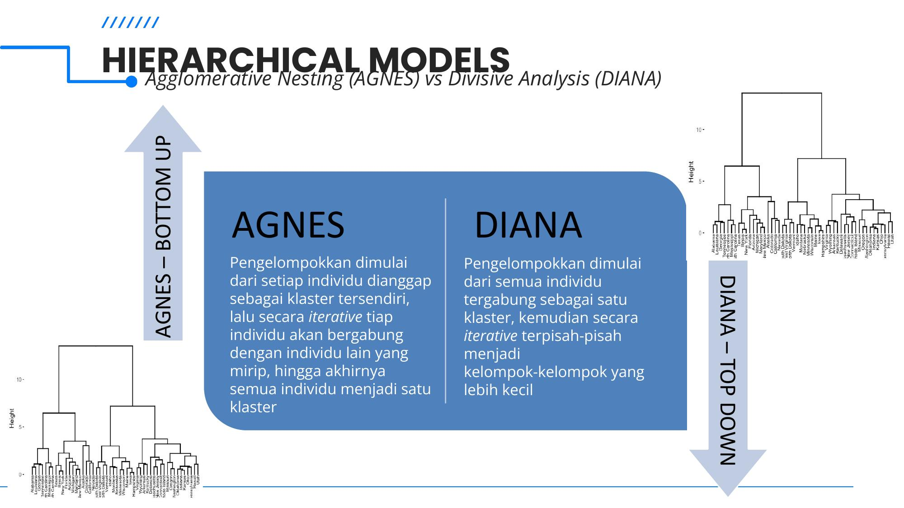
- Mulai dari $N$ klaster individu (setiap objek dianggap sebagai satu klaster tersendiri).
- Secara iteratif, pada setiap tahap dua klaster yang paling mirip (jarak terpendek) digabungkan menjadi satu klaster baru.
- Proses berlanjut hingga akhirnya semua objek tergabung dalam satu klaster besar tunggal.
- Metode paling populer di software statistik.
- Mulai dari satu klaster raksasa yang memuat seluruh objek data.
- Secara iteratif, pada setiap langkah klaster dipecah-pecah menjadi sub-klaster yang lebih kecil berdasarkan ketidaksamaan terbesar.
- Proses berlanjut hingga setiap objek terpisah menjadi klaster masing-masing (berisi 1 objek).
- Kompleksitas komputasinya cenderung lebih berat dibanding AGNES.
Langkah-Langkah Algoritma Hirarki (AGNES)
- Siapkan data: Bersihkan dan standarisasi data bila skala variabel berbeda.
- Hitung matriks jarak dissimilarity: Hitung jarak berpasangan antar seluruh objek (misal matriks $N \times N$ Euclidean).
- Gunakan fungsi linkage: Kelompokkan objek/klaster terdekat menjadi struktur pohon berdasarkan aturan linkage yang dipilih.
- Visualisasi Dendrogram: Gambar pohon dan tentukan tinggi pemotongan (cut-tree) untuk menentukan partisi final $k$ klaster.
6. Lima Fungsi Linkage (Ukuran Jarak Antar-Klaster)
Ketika dua klaster masing-masing memiliki lebih dari 1 objek, bagaimana cara mengukur jarak antara Klaster $C_1$ dan Klaster $C_2$? Inilah peran fungsi Linkage!
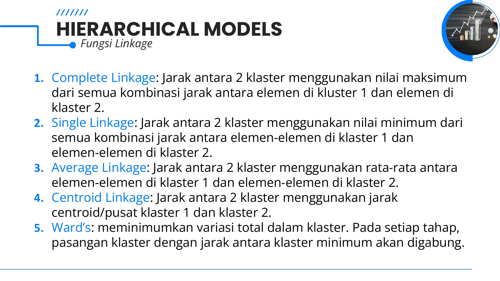
| Metode Linkage | Definisi Matematis | Karakteristik & Sifat di Ujian |
|---|---|---|
| Single Linkage (Nearest Neighbor) |
$$d(C_1, C_2) = \min_{x \in C_1, y \in C_2} d(x, y)$$ Jarak minimum dari semua pasangan elemen. |
Mampu mendeteksi klaster non-elliptical. Kelemahan fatal: Rentan Chaining Effect (efek rantai: titik perantara menghubungkan dua klaster yang sebenarnya terpisah). |
| Complete Linkage (Furthest Neighbor) |
$$d(C_1, C_2) = \max_{x \in C_1, y \in C_2} d(x, y)$$ Jarak maksimum dari semua pasangan elemen. |
Menghasilkan klaster yang kompak dan berdiameter serupa. Menghindari efek rantai, tetapi sensitif terhadap outlier. |
| Average Linkage (UPGMA) |
$$d(C_1, C_2) = \frac{1}{|C_1||C_2|} \sum_{x \in C_1} \sum_{y \in C_2} d(x, y)$$ Rata-rata seluruh pasangan elemen. |
Kompromi yang sangat baik antara Single dan Complete Linkage. Lebih tahan terhadap noise dan outlier. |
| Centroid Linkage (UPGMC) |
$$d(C_1, C_2) = d(\mu_1, \mu_2)$$ Jarak antara titik pusat (centroid) klaster 1 dan klaster 2. |
Mudah dipahami secara intuitif, namun dapat mengalami anomali inversion (dendrogram melengkung ke bawah). |
| Ward's Method (Minimum Variance) |
Meminimumkan kenaikan total variasi dalam klaster (SSE) saat digabung: $$\Delta \text{SSE} = \frac{|C_1||C_2|}{|C_1| + |C_2|} \|\mu_1 - \mu_2\|^2$$ | Metode yang paling sering direkomendasikan & dipakai dalam praktik! Cenderung menghasilkan klaster dengan ukuran jumlah anggota yang seimbang dan sangat padat (kompak). |
7. Dendrogram & Cara Memotong Pohon (Cut Tree)
- Sumbu Vertikal (Height / Jarak): Menunjukkan jarak dissimilarity saat dua klaster digabung. Semakin tinggi garis horizontal penghubung, semakin besar perbedaan antara kedua klaster yang digabung.
- Sumbu Horisontal: Mewakili label setiap individu/observasi data.
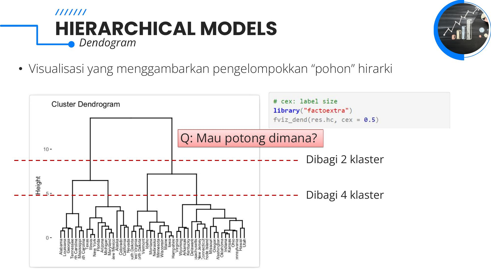
fviz_dend() dengan simulasi pemotongan pohon pada ketinggian berbeda.- Jika kita memotong pada garis vertikal yang memiliki "ruang lompatan tinggi" (vertical gap) terpanjang, partisi klaster yang terbentuk biasanya paling stabil alami.
- Pada Gambar 7:
- Potong di atas ($\text{Height} \approx 9$) $\to$ Terbentuk 2 klaster besar.
- Potong di bawah ($\text{Height} \approx 4.5$) $\to$ Terbentuk 4 klaster yang lebih spesifik.
8. Partitioning Model: K-Means Clustering
K-Means adalah algoritma partisi paling fundamental dan paling banyak digunakan di industri.
Konsep Dasar & Fungsi Objektif Hartigan-Wong
K-Means mempartisi $N$ observasi ke dalam $K$ klaster sedemikian rupa sehingga total variasi intra-cluster (Total Within-Cluster Variation / Within-Cluster Sum of Squares - WSS) diminimalkan.
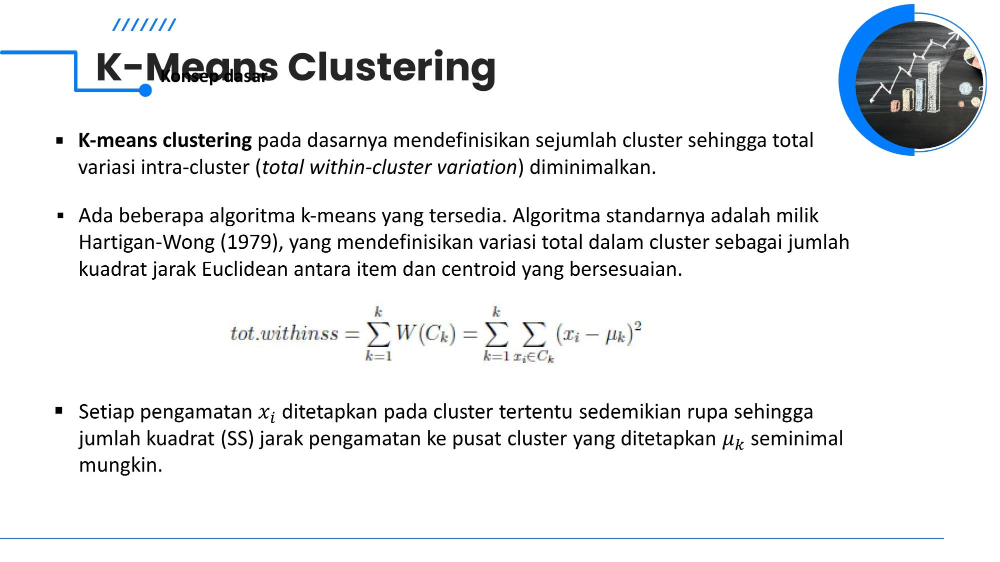
Langkah-Langkah Algoritma K-Means
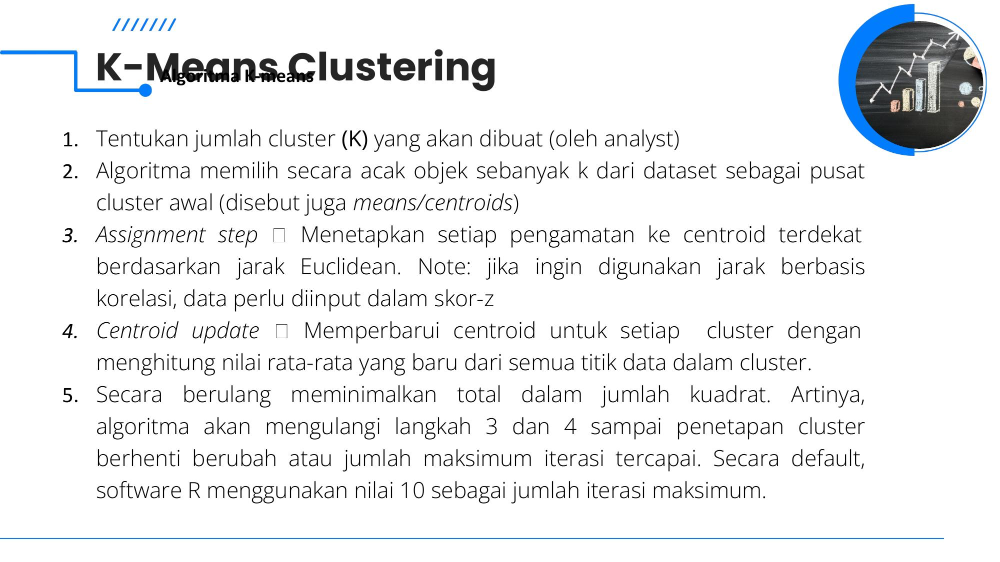
- Tentukan jumlah cluster ($K$): Ditentukan terlebih dahulu oleh analis/pengguna.
- Inisialisasi Pusat Awal: Algoritma memilih secara acak $K$ objek dari dataset sebagai pusat klaster awal (initial means / centroids).
- Assignment Step (Tahap Penugasan): Tetapkan setiap observasi $x_i$ ke centroid terdekat berdasarkan jarak Euclidean: $$c_i = \arg\min_k \|x_i - \mu_k\|^2$$ Catatan: Jika ingin menggunakan jarak korelasi, data wajib distandarisasi ke skor-z terlebih dahulu.
- Centroid Update (Pembaruan Pusat): Hitung kembali koordinat centroid untuk setiap klaster dengan menghitung nilai rata-rata baru dari semua titik yang menjadi anggotanya: $$\mu_k = \frac{1}{|C_k|}\sum_{x_i \in C_k} x_i$$
- Iterasi & Konvergensi: Ulangi langkah 3 dan 4 secara bolak-balik sampai penetapan anggota klaster tidak berubah lagi (konvergen) atau batas maksimum iterasi tercapai (di software R, default
iter.max = 10).
Kelebihan & Kekurangan K-Means (Materi Wajib Ujian!)
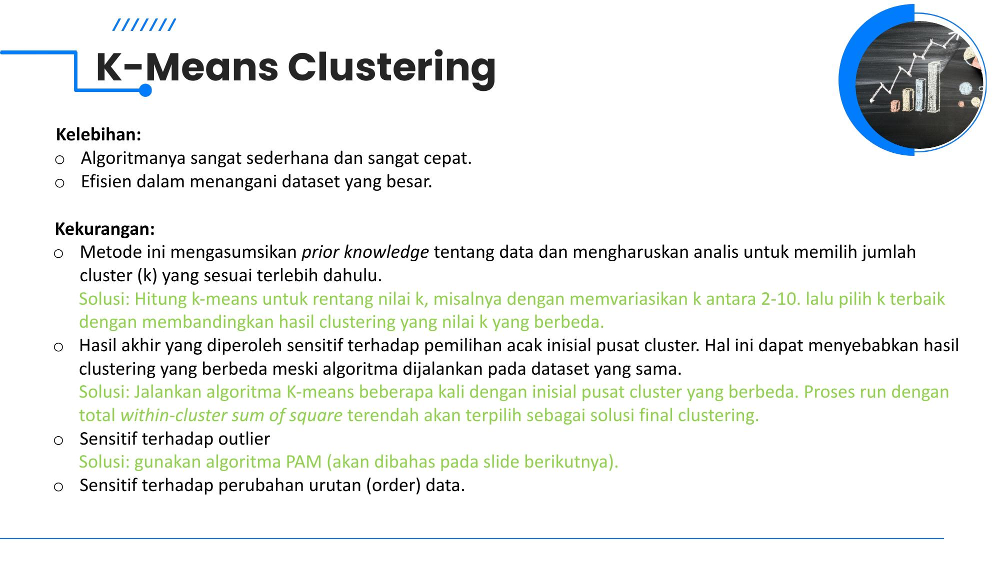
| Aspek | Detail Penjelasan | Solusi Resmi |
|---|---|---|
| Kelebihan |
1. Algoritma sangat sederhana, intuitif, dan sangat cepat. 2. Sangat efisien dalam menangani dataset berskala besar (kompleksitas waktu linier $O(t \cdot k \cdot n)$). |
— |
| Kekurangan 1: Harus Tentukan $K$ |
Mengasumsikan prior knowledge tentang data; analis dipaksa memilih $K$ di awal tanpa tahu struktur asli data. | Hitung K-Means untuk rentang nilai $K$ (misal $K = 2 \dots 10$), lalu evaluasi dengan metode Elbow, Silhouette, atau Gap Statistic. |
| Kekurangan 2: Sensitif Inisialisasi |
Pemilihan acak titik awal yang buruk dapat menjebak algoritma ke local optima, menghasilkan partisi berbeda di tiap run. | Jalankan algoritma beberapa kali dengan inisialisasi berbeda (parameter nstart > 1 di R, mis. nstart = 25). Pilih run dengan total withinss terendah. |
| Kekurangan 3: Sensitif Outlier |
Karena menggunakan nilai mean (rata-rata), satu titik outlier ekstrem dapat menarik centroid menjauh dari posisi sebenarnya. | Gunakan algoritma K-Medoids / PAM yang berbasis objek nyata (medoid) alih-alih mean. |
| Kekurangan 4: Bentuk Sferis |
Hanya efektif untuk klaster berbentuk bola/lingkaran (spherical). Gagal total pada klaster non-convex/berbentuk arbitrer. | Gunakan algoritma berbasis densitas seperti DBSCAN. |
| Kekurangan 5: Order Sensitive |
Sensitif terhadap urutan pembacaan baris data dalam beberapa implementasi. | Pengacakan dataset dan evaluasi kestabilan klaster. |
9. K-Medoids / PAM (Partitioning Around Medoids)
K-Medoids dicetuskan oleh Kaufman & Rousseeuw (1990) sebagai alternatif K-Means yang jauh lebih robust terhadap noise dan outlier.
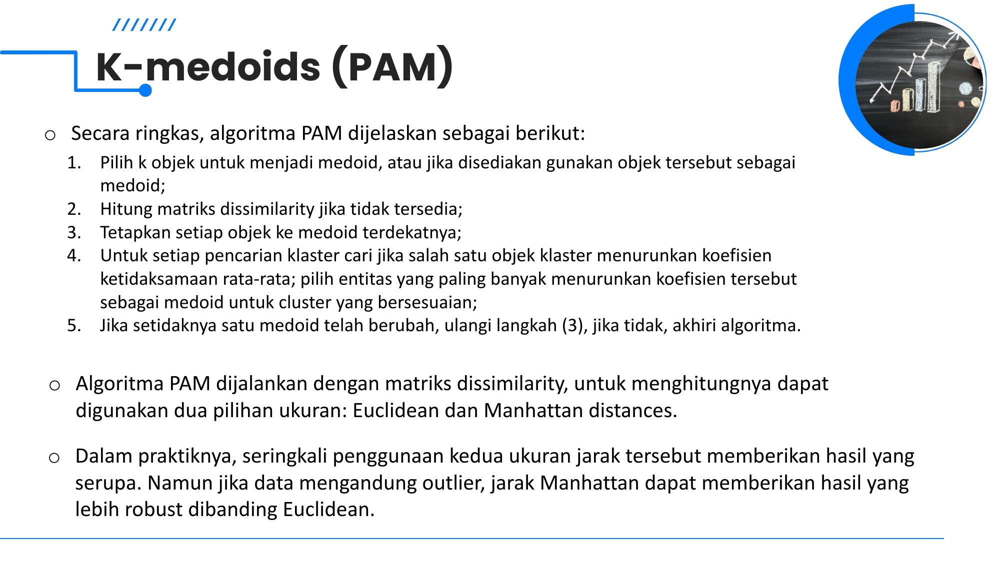
Apa itu Medoid?
Mengapa PAM Lebih Robust?
- K-Means memakai mean (bisa berupa titik imajiner yang terdistorsi jauh oleh outlier).
- PAM memakai medoid aktual (objek nyata di dataset) dan meminimalkan jumlah jarak absolut (mirip prinsip median).
- Algoritma PAM dapat dijalankan dengan matriks dissimilarity berbasis Euclidean maupun Manhattan. Manhattan distance memberikan hasil yang paling robust terhadap outlier.
Langkah Algoritma PAM (Slide 23)
- Pilih $k$ objek untuk menjadi medoid awal (bisa acak atau ditentukan).
- Hitung matriks dissimilarity antar semua objek jika belum tersedia.
- Tetapkan setiap objek ke medoid terdekatnya berdasarkan matriks jarak.
- Swap Step (Pencarian Medoid Baru): Untuk setiap klaster, uji apakah mengganti medoid dengan objek non-medoid lain dapat menurunkan rata-rata dissimilarity seluruh anggota klaster. Jika ada objek yang menurunkan koefisien dissimilarity paling besar, jadikan objek tersebut sebagai medoid baru.
- Iterasi: Jika setidaknya ada satu medoid yang berubah, ulangi langkah 3. Jika tidak ada lagi medoid yang berubah, algoritma selesai!
Fungsi di R
- Fungsi
pam()dari packagecluster:pam(x, k, metric = "euclidean", stand = FALSE). Output: medoids dan vektor assignment cluster. - Fungsi
pamk()dari packagefpc: kelebihannya tidak memerlukan spesifikasi manual jumlah $K$ oleh pengguna (dapat mengestimasi $K$ otomatis!). - Visualisasi hasil klaster:
fviz_cluster(pam.res)dari packagefactoextra.
10. CLARA (Clustering Large Applications)
Meskipun PAM sangat robust, algoritma PAM memiliki kelemahan besar: membutuhkan memori $O(N^2)$ dan waktu komputasi yang berat pada dataset besar karena harus menghitung matriks jarak semua pasangan objek.
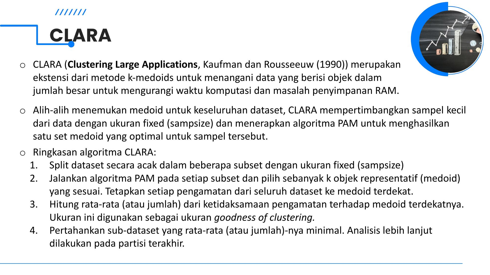
Mekanisme Kerja CLARA: Sampling Strategy
Alih-alih mencari medoid pada keseluruhan dataset $N$, CLARA mengambil sampel kecil berukuran tetap (sampsize) secara acak dan menerapkan algoritma PAM pada sampel tersebut.
- Random Sampling: Split dataset secara acak ke dalam beberapa subset sampel berukuran tetap (default
sampsize = 40 + 2k). - Jalankan PAM pada Sampel: Terapkan PAM pada subset sampel untuk menghasilkan $k$ objek medoid optimal dari sampel tersebut. Lalu petakan seluruh objek dari dataset lengkap ke medoid terdekat.
- Hitung Ukuran Goodness: Hitung rata-rata atau total ketidaksamaan (dissimilarity) dari seluruh observasi dataset terhadap medoid terdekatnya.
- Pilih Subset Terbaik: Ulangi proses ini beberapa kali (default 5 sampel). Pertahankan sub-dataset/medoid yang menghasilkan total dissimilarity paling minimal. Partisi akhir menggunakan medoid terbaik tersebut.
11. Estimasi Jumlah Klaster Optimal ($K$ Optimal)
Bagaimana menentukan nilai $K$ terbaik secara objektif? Slide membaginya menjadi 2 kategori utama:
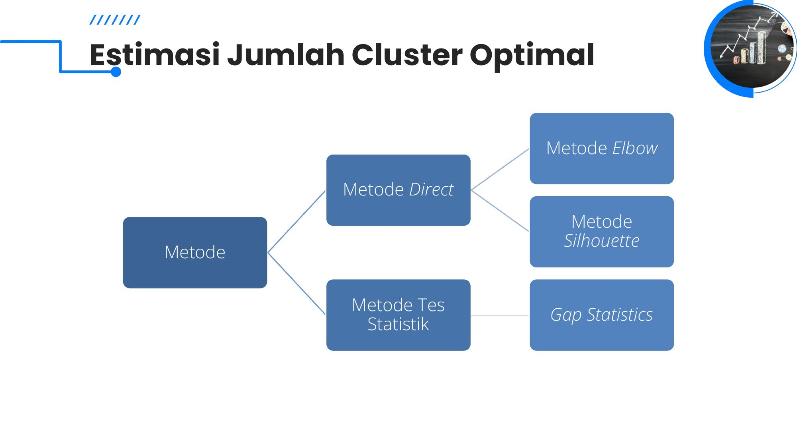
1. Elbow Method (Direct)
Mengevaluasi total Within-Cluster Sum of Squares (WSS) sebagai fungsi dari jumlah klaster $k$.
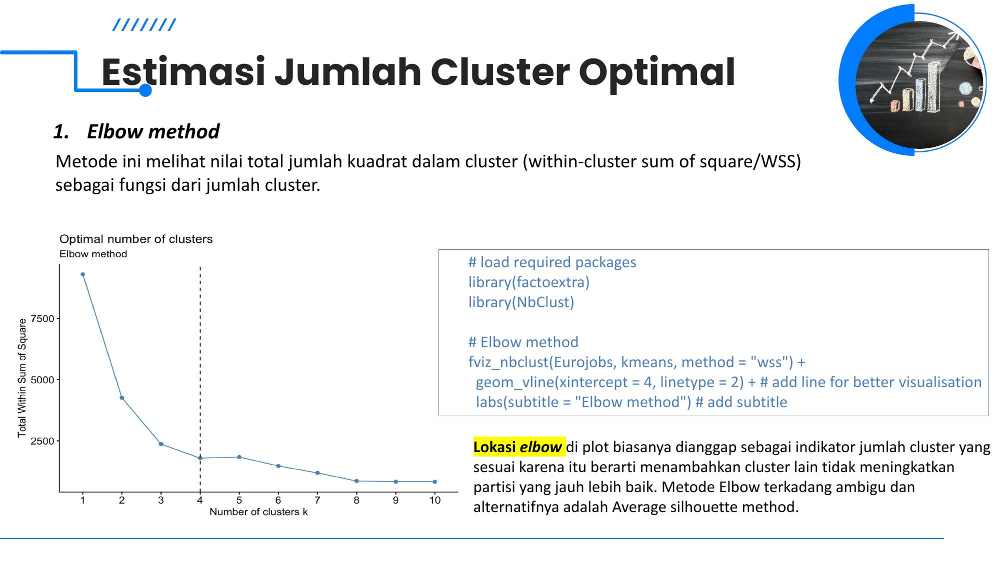
- Nilai WSS akan selalu turun seiring bertambahnya $k$.
- Cari titik "siku" (elbow/knee) di mana penurunan WSS melambat secara drastis.
- Menambahkan klaster setelah siku tidak lagi meningkatkan partisi secara signifikan.
- Kelemahan: Terkadang kurva sangat mulus sehingga lokasi siku ambigu/subjektif.
fviz_nbclust(data, kmeans, method="wss")
2. Average Silhouette (Direct)
Mengukur seberapa baik setiap titik terletak di dalam klasternya dibandingkan klaster tetangga.
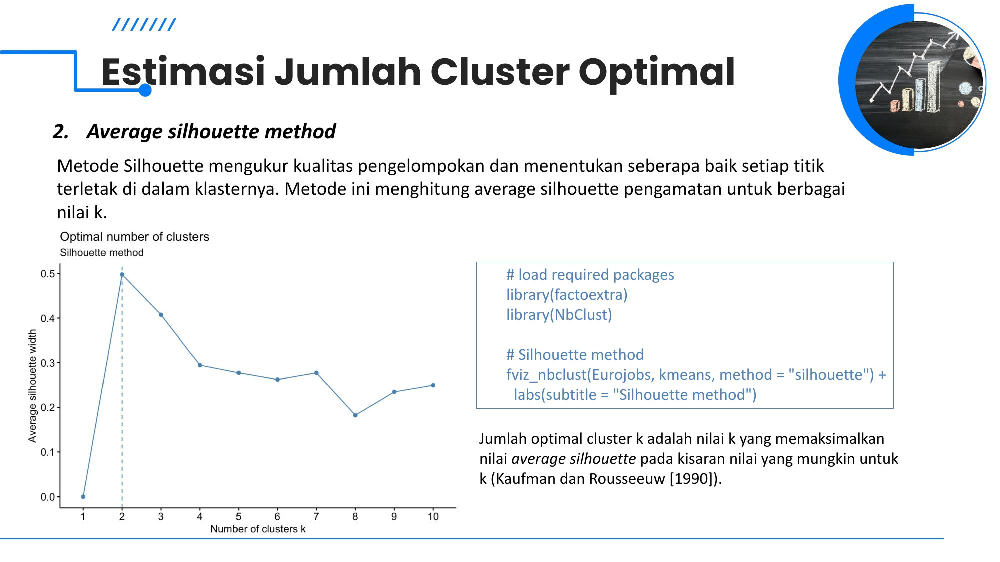
- $a(i)$: rata-rata jarak $i$ ke titik lain di klaster yang sama (kohesi).
- $b(i)$: rata-rata jarak terendah $i$ ke titik di klaster tetangga terdekat (separasi).
- Nilai $s(i) \in [-1, 1]$. Nilai mendekati 1 menandakan titik terklaster sangat baik.
- $K$ optimal = nilai $k$ yang MEMAKSIMALKAN Average Silhouette Width.
fviz_nbclust(data, kmeans, method="silhouette")
3. Gap Statistic (Statistik)
Dapat diterapkan pada metode clustering apa pun (Tibshirani et al., 2001).
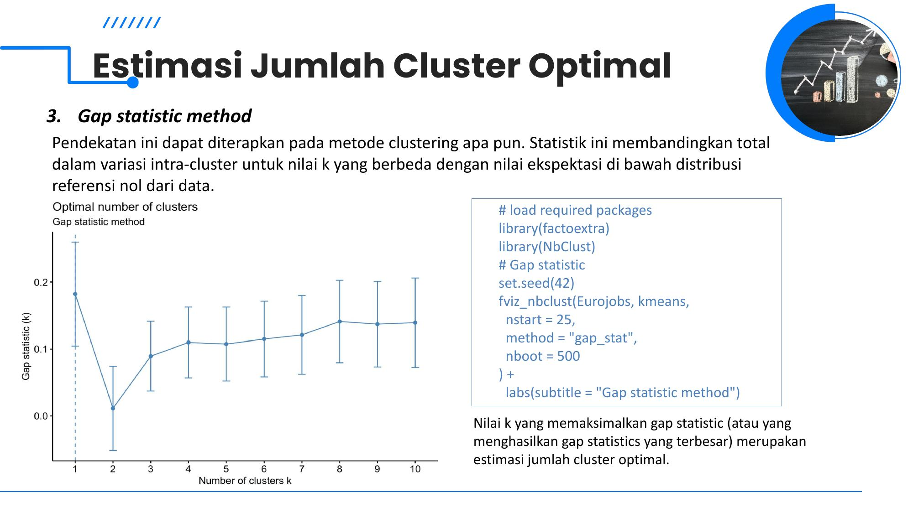
- Membandingkan total variasi intra-cluster data asli $\log(W_k)$ dengan nilai ekspektasi di bawah distribusi referensi nol seragam (data tanpa struktur klaster).
- $$\text{Gap}(k) = E^*_n\{\log(W_k)\} - \log(W_k)$$
- $K$ optimal = nilai $k$ yang MEMAKSIMALKAN Gap Statistic (menghasilkan nilai Gap terbesar).
fviz_nbclust(data, kmeans, method="gap_stat", nboot=500)
12. Advanced & Other Clustering Methods
1. Hierarchical K-Means (`hkmeans`)
- Pendekatan hybrid untuk memperbaiki hasil clustering K-Means.
- Menggabungkan kelebihan Hierarki (tidak butuh inisialisasi acak) dan K-Means (cepat dan partisi optimal).
- Dijalankan dengan fungsi
hkmeans()di packagefactoextra.
2. Fuzzy Clustering (Soft Clustering)
- Berbeda dari hard clustering (di mana 1 titik hanya milik 1 klaster pasti).
- Setiap titik memiliki koefisien derajat keanggotaan (membership $u_{ik} \in [0, 1]$) untuk setiap klaster.
- Titik di pusat memiliki nilai keanggotaan tinggi, sedangkan titik di perbatasan memiliki derajat terbagi antar klaster.
- Algoritma paling populer: Fuzzy C-Means (FCM).
- Di R: fungsi
fanny()di packagecluster(FANNY = Fuzzy Analysis Clustering).
3. Model-Based Clustering
- Data dipandang berasal dari campuran dua atau lebih distribusi probabilitas (misal Gaussian Mixture Models / GMM).
- Mencari model distribusi yang paling pas (fit) dengan data dan mengestimasi jumlah klaster optimal via kriteria BIC/AIC.
- Dapat digunakan untuk univariat maupun multivariat.
- Di R: fungsi
Mclust()di packagemclust.
4. DBSCAN (Density-Based Clustering)
- Dicetuskan oleh Ester et al. (1996).
- Mengelompokkan data berdasarkan kepadatan spasial (density). Titik dalam area padat dikelompokkan bersama.
- Keunggulan Utama:
- Dapat mengidentifikasi klaster dengan bentuk arbitrer (cincin, elips, bulan sabit), tidak harus lingkaran/sferis.
- Sangat tahan terhadap noise dan outlier (titik di area renggang langsung dilabeli sebagai noise).
- Tidak mengharuskan pengguna menentukan jumlah $K$ di awal.
- Di R: package
fpcataudbscan.
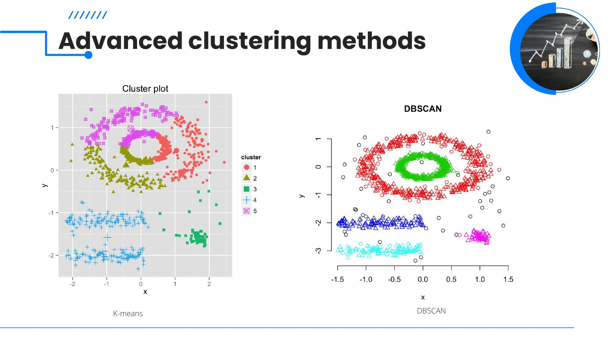
Metode Klaster Lainnya (Slide 33)
| Metode | Penemu / Konsep | Jenis Data | Package R |
|---|---|---|---|
| K-Modes | Huang (1997). Mengganti pusat rata-rata (mean) dengan modus (mode) dan menggunakan ukuran kecocokan kategori. | Data Kategorikal (Nominal) | klaR |
| K-Prototypes | Penggabungan K-Means (untuk atribut numerik) dan K-Modes (untuk atribut kategorikal). | Data Campuran (Mixed: Numerik + Kategori) | clustMixType |
| Ensemble Clustering | Menggabungkan sejumlah pengelompokan yang berbeda menjadi satu konsensus tunggal yang lebih robust dan stabil. | Konsensus Multi-partisi | diceR |
13. Contoh Soal Hitung Manual Khas Ujian STIS
Soal tipe hitungan manual di UAS STIS sering meminta mahasiswa menghitung 1 iterasi K-Means atau menghitung matriks jarak.
Contoh 1: Iterasi K-Means Manual (2 Dimensi, K = 2)
Soal: Diberikan 4 data observasi 2D: $A(1, 1)$, $B(2, 1)$, $C(4, 3)$, $D(5, 4)$. Tetapkan $K=2$. Misalkan centroid awal dipilih $m_1 = A(1, 1)$ dan $m_2 = B(2, 1)$. Lakukan 1 iterasi K-Means (Assignment & Centroid Update)!
Langkah 1: Hitung Jarak Euclidean ke Tiap Centroid
| Titik | Koordinat | $d(x, m_1)$ ke $(1,1)$ | $d(x, m_2)$ ke $(2,1)$ | Klaster Baru |
|---|---|---|---|---|
| A | (1, 1) | $\sqrt{(1-1)^2 + (1-1)^2} = \mathbf{0}$ | $\sqrt{(1-2)^2 + (1-1)^2} = 1$ | Klaster 1 |
| B | (2, 1) | $\sqrt{(2-1)^2 + (1-1)^2} = 1$ | $\sqrt{(2-2)^2 + (1-1)^2} = \mathbf{0}$ | Klaster 2 |
| C | (4, 3) | $\sqrt{(4-1)^2 + (3-1)^2} = \sqrt{9+4} = \sqrt{13} \approx 3.61$ | $\sqrt{(4-2)^2 + (3-1)^2} = \sqrt{4+4} = \sqrt{8} \approx \mathbf{2.83}$ | Klaster 2 |
| D | (5, 4) | $\sqrt{(5-1)^2 + (4-1)^2} = \sqrt{16+9} = \sqrt{25} = 5$ | $\sqrt{(5-2)^2 + (4-1)^2} = \sqrt{9+9} = \sqrt{18} \approx \mathbf{4.24}$ | Klaster 2 |
Langkah 2: Hasil Partisi Klaster Baru
- Klaster 1: $\{A\}$
- Klaster 2: $\{B, C, D\}$
Langkah 3: Centroid Update (Pusat Baru)
- $m_1^{baru} = A = (1, 1)$
- $m_2^{baru} = \left(\frac{2+4+5}{3}, \frac{1+3+4}{3}\right) = \left(\frac{11}{3}, \frac{8}{3}\right) \approx (3.67, 2.67)$
Contoh 2: Perbedaan Single Linkage vs Complete Linkage
Misalkan Klaster $C_1 = \{A(0,0), B(1,0)\}$ dan Klaster $C_2 = \{C(4,0), D(6,0)\}$.
- Jarak pasangan elemen:
- $d(A,C) = |0-4| = 4$
- $d(A,D) = |0-6| = 6$
- $d(B,C) = |1-4| = 3$
- $d(B,D) = |1-6| = 5$
- Single Linkage: $\min(4, 6, 3, 5) = \mathbf{3}$ (jarak terdekat antar anggota, yaitu pasangan $B-C$).
- Complete Linkage: $\max(4, 6, 3, 5) = \mathbf{6}$ (jarak terjauh antar anggota, yaitu pasangan $A-D$).
- Average Linkage: $\frac{4 + 6 + 3 + 5}{4} = \frac{18}{4} = \mathbf{4.5}$.
14. Matriks Perbandingan Komprehensif Algoritma Klaster
| Metode | Tipe Model | Perlu $K$ di Awal? | Bentuk Klaster | Sensitivitas Outlier | Kelebihan Utama | Kelemahan Utama |
|---|---|---|---|---|---|---|
| K-Means | Partisi | Ya | Spherical (Bulat) | Sangat Sensitif | Sangat cepat, efisien data besar | Terjebak local optima, outlier merusak mean |
| K-Medoids (PAM) | Partisi | Ya | Spherical (Bulat) | Sangat Robust | Tahan outlier, pusat data riil | Lambat untuk dataset besar ($O(n^2)$) |
| CLARA | Partisi (Sampling) | Ya | Spherical (Bulat) | Robust | Skalabilitas tinggi untuk Big Data | Hasil tergantung kualitas sampel acak |
| AGNES | Hierarki (Bottom-Up) | Tidak | Tergantung linkage | Sensitif (Complete) / Tahan (Ward) | Menghasilkan dendrogram visual lengkap | Kompleksitas $O(n^2)$ s.d $O(n^3)$ |
| DIANA | Hierarki (Top-Down) | Tidak | Tergantung split | Moderat | Melihat gambaran besar partisi atas | Komputasi sangat berat saat split |
| DBSCAN | Density-Based | Tidak | Arbitrer (Segala Bentuk) | Sangat Tahan (Noise Filter) | Menemukan bentuk non-linear & filter noise | Sulit jika densitas klaster bervariasi |
| Fuzzy C-Means | Soft Clustering | Ya | Spherical berderajat | Moderat | Objek dapat menjadi anggota multi-klaster | Penentuan parameter fuzzifier $m$ |
15. Checklist Persiapan UAS STIS
- ☐ Definisi Kunci: Paham intracluster similarity (maksimum) vs intercluster dissimilarity (maksimum).
- ☐ Rumus Jarak: Hafal Euclidean ($L_2$), Manhattan ($L_1$), dan logika korelasi Pearson vs Eisen (mean = 0) vs Spearman (rank) vs Kendall ($n_c - n_d$).
- ☐ Pilihan Jarak: Tahu kapan pakai Euclidean (magnitudo penting) vs Korelasi (profil/tren bentuk penting seperti ekspresi gen).
- ☐ Hierarki: Paham AGNES (bottom-up) vs DIANA (top-down) dan 5 fungsi linkage (Single, Complete, Average, Centroid, Ward).
- ☐ K-Means: Paham 5 langkah algoritma Hartigan-Wong, rumus objective WSS, 4 kelemahan K-Means beserta solusinya.
- ☐ PAM vs CLARA: Mengapa PAM lebih robust dibanding K-Means (medoid vs mean), dan mengapa CLARA dipakai untuk Big Data (strategi sampling).
- ☐ Estimasi K: Elbow method (cari siku WSS), Silhouette method (maksimalkan rata-rata silhouette), Gap statistic (maksimalkan Gap).
- ☐ DBSCAN: Keunggulan utama (bentuk arbitrer, tahan noise, tanpa perlu menentukan $K$ di awal).
- ☐ Metode Khusus: K-Modes (kategorikal), K-Prototypes (campuran), Mclust (model-based), Fanny (fuzzy).
- ☐ Hitungan: Latihan hitung manual Euclidean distance dan 1 siklus assignment K-Means.